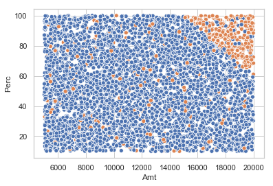

Introduction
One of the challeges in AML is that labels are not clean and prone to human error. Sometimes, decisioning happens at one level e.g. Case, while modelling happens at a different level. e.g. Alert. This often requires inferring the alert labels from case labels that introduces noise or it requires analysts to manually go and decision alerts which can be time consuming.
Besides the fact that incidence of money laundering is not often clear cut or very evident means that there is some degree of noise in the labels provided by any investigator.
There has been extensive reasearch into learning with Noisy labels. One of the most usable approaches has been described in this paper and implemented in this open source python package
Overview of Approach
Assumptions
Class Conditional Noise Process
It is assumed that labels follow a class conditional noise process i.e. the label errors are dependant on the true latent class of an observation. This means that an oracle can draw a clean alert i.e. non suspicious from a distribution of clean alerts , but while reporting whether it is suspicious or not, makes independant ,random mistakes with some unkown probabiltiy \(\eta\)< 0.5 ; assume\(\eta\) = 0.4
This means that after drawing a clean example, the oracle flips a coin with probability of showing head of \(1 - \eta\) (0.6). If the coin comes up as head, the example is reported to be clean else, it is reported as suspicious.
Similarly for suspicious alerts, mistakes are made with some specified proabability.
Methodology
- Estimate the joint distribution of given, noisy labels and latent (unknown) uncorrupted labels to fully characterize class-conditional label noise.
- Find and prune noisy examples with label issues.
- Train with errors removed, re-weighting examples by the estimated latent prior.
The central idea of the approach is ‘self confidence’. Self confidence is the predicted probability that an example \(x\)belongs to its given label\(\tilde{y}\) i.e. there is no label error.If the predicted probability of a class is greater than a threshold given by the average predicted proababilties of examples in that class i.e if there is high self confidence, the example is confidently counted as belonging to the specified class.
This idea of ‘self confidence’ is used to estimate the joint distribution between true and noisy labels.Once this is estimated, the number of label issues in a data set i.e. clean alerts being labelled suspicious(Type I error) and suspicious alerts being labelled clean(Type II error)-can be estimated. For each type of error, the most likely mislabelled examples are identifed.
The model is then retrained after removing the errors and appropriately reweighting the examples.
Refer to the original paper for extra details.
Experiment
Now we will examine how effective this method is using some simulated data that is representative of the type of labellign errors we see in AML use cases
Data
Consider the HRCP Scenario being used at an institutions. The scenario generates alerts when the Very High Risk Amount is greater than $5000 and the Very High Risk Transaction Count is greater than 10. It is assumed that these two parameters alone are sufficient to detect the truly effective alerts and the decision boundary is linear. Effectiveness on one side of the decision boundary is considered to be 90% while it is 5% on the other side.
import numpy as np
import seaborn as sns
import matplotlib.pyplot as pltnp.random.seed(10)
#Simulate alert parameters
N = 5000 # no of samples
Amt = np.asarray(np.random.uniform(low=5000,high=20000,size=N))
Perc = np.asarray(np.random.uniform(low=10,high=100,size=N))alerts = np.column_stack((Amt,Perc))inside_region_indices = np.ravel(np.argwhere(( 125 * Perc + Amt >= 27400)))
outside_region_indices = np.setdiff1d(np.arange(5000),inside_region_indices)
#90% of observations inside the region are effective
effective_indices_i = np.random.choice(inside_region_indices,size = int(len(inside_region_indices)*0.9),replace= False)
#5% of observations outside the region are effective
effective_indices_o = np.random.choice(outside_region_indices,size = int(len(outside_region_indices)*0.05),replace=False)
#Combone both
effective_indices = np.append(effective_indices_i,effective_indices_o)
effective_flag1 = np.zeros(N,dtype=int)
effective_flag1[effective_indices] = 1Create a pandas dataframe as shown below
alerts_df = pd.DataFrame([Amt,Perc,effective_flag1]).T
alerts_df.columns = ['Amt','Perc','effective_flag']
alerts_df['effective_flag'] = alerts_df['effective_flag'].astype('category')
alerts_df.head()| Amt | Perc | effective_flag | |
|---|---|---|---|
| 0 | 16569.809649 | 23.055201 | 0.0 |
| 1 | 5311.279240 | 32.199579 | 0.0 |
| 2 | 14504.723524 | 17.939790 | 0.0 |
| 3 | 16232.058238 | 52.469434 | 0.0 |
| 4 | 12477.605185 | 66.851593 | 0.0 |
The frequency count of the effective flag is as follows
alerts_df['effective_flag'].value_counts()0.0 4444
1.0 556
Name: effective_flag, dtype: int64sns.set(style='whitegrid')
sns.scatterplot(x="Amt",y="Perc",hue="effective_flag",data=alerts_df,legend=False)
plt.show()
Now consider that there have been labelling errors due to inferring the disposition of alerts from cases. This causes the disposition of some number of alerts across the alert region to be flipped from non effective to effective. We will assume the disposition of 5% of the non effective alerts have been flipped from effective to non effective
non_effective_indices = np.setdiff1d(np.arange(5000),effective_indices)
#The mislabelled indices are pre selected
mislabelled_indices = np.random.choice(non_effective_indices,size = int(len(non_effective_indices)*0.05),replace=False)
effective_flag2 = np.copy(effective_flag1)
effective_flag2[mislabelled_indices] = 2
alerts_df['effective_flag'] =pd.Series(effective_flag2).astype('category')The frequency count of the updated effective flag is as follows
alerts_df['effective_flag'].value_counts()0 4222
1 556
2 222
Name: effective_flag, dtype: int64The udpated dataset looks as follows.
sns.set(style='whitegrid')
sns.scatterplot(x="Amt",y="Perc",hue="effective_flag",data=alerts_df,legend=False)
plt.show()Create a new dataset with observed and true labels.
true_labels = pd.Series(effective_flag1)
observed_labels = pd.Series((effective_flag2 >0).astype(int))
alerts_df_final = alerts_df.iloc[:,0:2]
alerts_df_final['true_labels'] = true_labels
alerts_df_final['observed_labels'] = observed_labelsalerts_df_final.head()| Amt | Perc | true_labels | observed_labels | |
|---|---|---|---|---|
| 0 | 16569.809649 | 23.055201 | 0 | 0 |
| 1 | 5311.279240 | 32.199579 | 0 | 0 |
| 2 | 14504.723524 | 17.939790 | 0 | 0 |
| 3 | 16232.058238 | 52.469434 | 0 | 0 |
| 4 | 12477.605185 | 66.851593 | 0 | 0 |
true_labels.value_counts()0 4444
1 556
dtype: int64observed_labels.value_counts()0 4222
1 778
dtype: int64Using cleanlab
First and foremost cleanlab can be used to identify the noisy labels
#Create dataset compatible with sklearn
X = alerts_df_final[['Amt','Perc']].values
y_observed = observed_labels.values
y_true = true_labels.valuesImport required packages and functions
import cleanlab
from cleanlab.latent_estimation import estimate_py_noise_matrices_and_cv_pred_proba
from sklearn.linear_model import LogisticRegression
from cleanlab.pruning import get_noise_indicesclf1 = LogisticRegression(multi_class = 'ovr', max_iter =1000,solver = 'lbfgs')
est_py , est_nm, est_inv,confident_joint, my_psx = estimate_py_noise_matrices_and_cv_pred_proba(X = X,
s= y_observed,
clf = clf1)predicted_label_errors = get_noise_indices(y_observed,my_psx,n_jobs=1)
predicted_label_error_indices = np.argwhere(predicted_label_errors==True)print('The dataset had a total of {} label errors'.format(len(mislabelled_indices)))
print('Clean lab has predicted a total of {} label errors'.format(len(predicted_label_error_indices)))
print('Out of the {} true label errors, clean lab has correctly identified {}'.format(len(mislabelled_indices),
len(np.intersect1d(predicted_label_error_indices,
mislabelled_indices))))The dataset had a total of 222 label errors
Clean lab has predicted a total of 424 label errors
Out of the 222 true label errors, clean lab has correctly identified 139We an also evaluate the performance of the classfier after pruning the examples identified as noisy by cleanlab. First we will train a classifier without using cleanlab. For training we will use the observed labels while for testing we will use the true labels.
from sklearn.model_selection import train_test_split
X_train,_,y_train,_ = train_test_split(X,y_observed,test_size = 0.3,shuffle=False)
_,X_test,_,y_test = train_test_split(X,y_true,test_size = 0.3,shuffle=False)bincount = np.bincount(y_train)
threshold = bincount[1]/sum(bincount)
print('The threshold used for classification is the prior probability of effectiveness \
in the training data {0:.3f}'.format(threshold))The threshold used for classification is the prior probability of effectiveness in the training data 0.158from sklearn.metrics import f1_score,precision_score,recall_score
clf = LogisticRegression(solver='lbfgs', multi_class='ovr', max_iter=1000)
_ = clf.fit(X_train,y_train)
pred_prob = clf.predict_proba(X_test)[:,1]
pred = (pred_prob >threshold).astype(int)
print('Without confident learning, the f1_score produced by the model is {:.3f}'.format(f1_score(y_test,pred)) )
print('Without confident learning, the precision_score produced by the model is {:.3f}'.format(precision_score(y_test,pred)))
print('Without confident learning, the recall_score produced by the model is {:.3f}'.format(recall_score(y_test,pred)))Without confident learning, the f1_score produced by the model is 0.099
Without confident learning, the precision_score produced by the model is 0.057
Without confident learning, the recall_score produced by the model is 0.389Now we will see what model performance looks like when using confident learning
from cleanlab.classification import LearningWithNoisyLabels
clf = LogisticRegression(solver='lbfgs', multi_class='ovr', max_iter=1000)
rp = LearningWithNoisyLabels(clf =clf,seed=2)
_ = rp.fit(X_train,y_train)
pred_prob = rp.predict_proba(X_test)[:,1]
pred = (pred_prob >threshold).astype(int)
print('With confident learning, the f1_score produced by the model is {:.3f}'.format(f1_score(y_test,pred)) )
print('With confident learning, the precision_score produced by the model is {:.3f}'.format(precision_score(y_test,pred)))
print('With confident learning, the recall_score produced by the model is {:.3f}'.format(recall_score(y_test,pred)))With confident learning, the f1_score produced by the model is 0.316
With confident learning, the precision_score produced by the model is 0.208
With confident learning, the recall_score produced by the model is 0.654